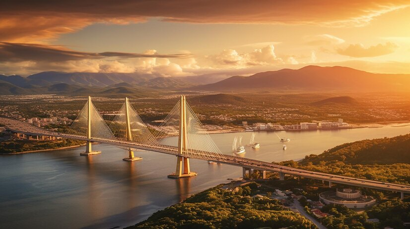

EcoViajar
Home
Destinos
Dicas Sustentáveis
Blog
Contato
Florianópolis

Conhecida por suas praias, natureza e cultura local.
Pontos Turísticos
Praia Mole
Ilha do Campeche
Centro Histórico
Cuidados a Serem Tomados
Verifique as condições do mar antes de nadar.
Leve protetor solar, especialmente no verão.